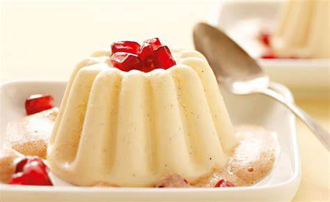

Vanillepudding
Ingrediënten:
- 500 ml melk
- 100 g suiker
- 40 g maïzena
- 2 eierdooiers
- 1 vanillestokje (of 1 theelepel vanille-extract)
- Een snufje zout
Instructies:
- Verwarm 450 ml melk in een pan, voeg het vanillestokje (of vanille-extract) toe en breng bijna aan de kook.
- In een kom, meng suiker, maïzena, eierdooiers en een snufje zout. Voeg de overgebleven 50 ml melk toe en roer goed door.
- Giet het hete melkmengsel langzaam bij het eimengsel en blijf constant roeren om klontjes te voorkomen.
- Giet het mengsel terug in de pan en verwarm op laag vuur. Blijf roeren totdat de pudding dikker wordt.
- Haal de pan van het vuur, verwijder het vanillestokje en giet de pudding in individuele schaaltjes.
- Laat de vanillepudding afkoelen en zet het vervolgens minstens 2 uur in de koelkast om op te stijven.
